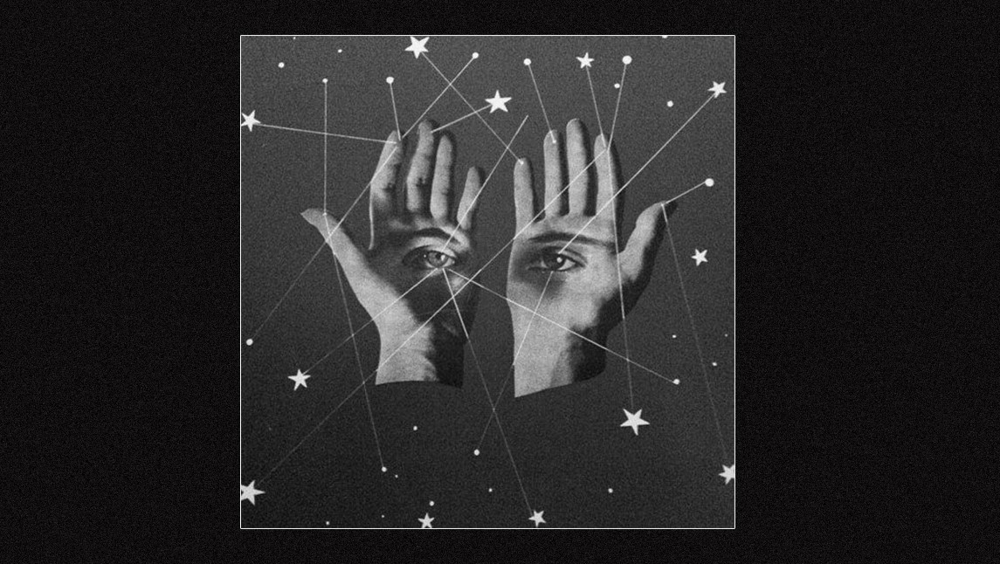

Escorpio -junto a su regente, Plutón- nos traen la verdad que se oculta detrás de los telones librianos y, por eso mismo, son las energías que representan la transformación en su máxima expresión.
Ahora bien, ¿la transformación de qué? Para la Astrología Evolutiva Plutón es el ALMA, es decir, es esa identidad que somos más allá del cuerpo humano (Tauro). Justamente por eso Escorpio está en el 8vo lugar de la rueda zodiacal, representando entre otras cosas "la muerte". Porque Escorpio nos recuerda que el cuerpo no es eterno, propulsándonos a encontrar entonces un sentido para la vida y una verdad (Sagitario/Júpiter) que están más allá de la materia; así como nos propone otro factor determinante que debe "morir" para poder renacer hacia una realidad mucho más bienaventurada que lo que hayamos imaginado hasta entonces: el Ego. Para poder reconocer a nuestra Alma debemos dejar morir a nuestro Ego, para lograr soltar aquello que ya no nos pertenece -porque no nos sirve para la evolución de nuestra verdadera identidad- debemos desapegarnos.
Seguramente es por esto por lo que le tememos tanto a Escorpio y a Plutón: porque nos invitan a desapegarnos de una vida carente de sentido (y con ella de creencias, pensamientos, y actitudes vanas) para expandir nuestra conciencia y tener Fe en algo mucho más grande que nosotros mismos (Sagitario, Casa IX).
Los momentos de Luna Llena por su parte iluminan el Cielo. Nos muestra lo que antes no veíamos, potenciando de esta manera la fuerza que de por sí ya tiene Escorpio para traernos frente a frente lo que antes se nos escapaba. Es una gran oportunidad entonces cuando tenemos una Luna Llena para potenciar el foco y acercarnos un poco más hacia aquello que de verdad somos, recibiendo los sucesos que en estos días se nos presenten como ayuda celestial para caminar lentamente hacia ese lugar sagrado. En el eje Tauro-Escorpio, materia y espíritu van de la mano trabajando juntos en pos de avanzar. Así también, La Luna y el Sol forman parte indisoluble de lo que somos y de la maravillosa casa en la que habitamos, danzando unidos para enseñarnos ritmos, respeto, cooperación.
Que en esta próxima Luna Llena en Escorpio en oposición al Sol en Tauro del 5 de mayo 2023 -que además será Eclipse- se nos ilumine un profundo agradecimiento en el corazón por la oportunidad de estar vivos, para poder aprender a soltar el sufrimiento de una vez por todas y para siempre. ¡Que así sea!